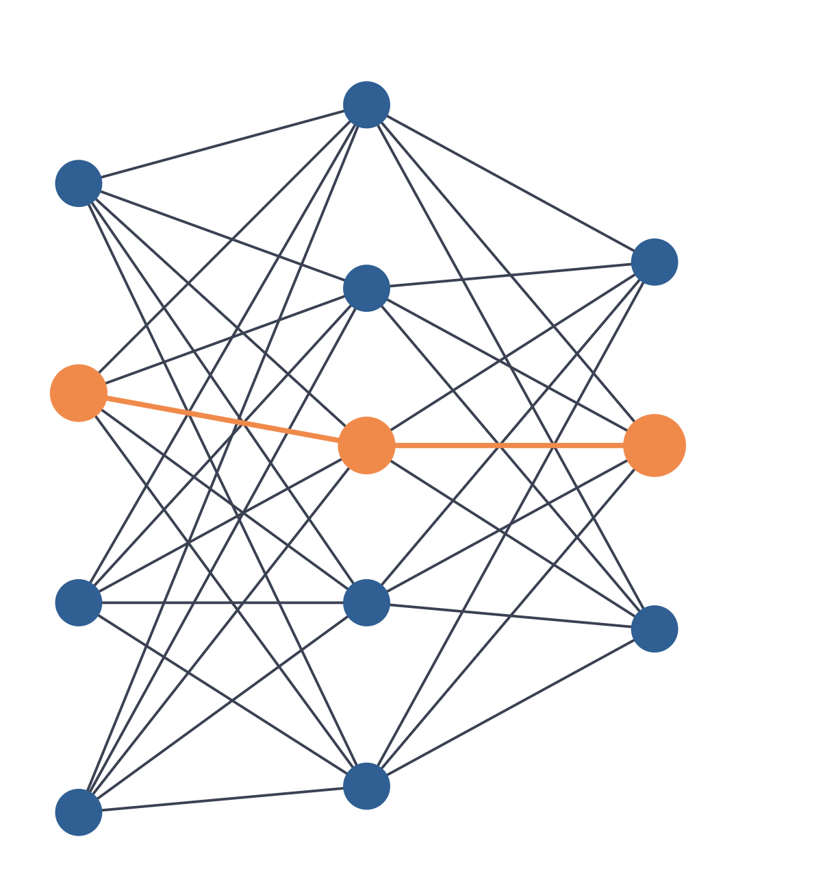
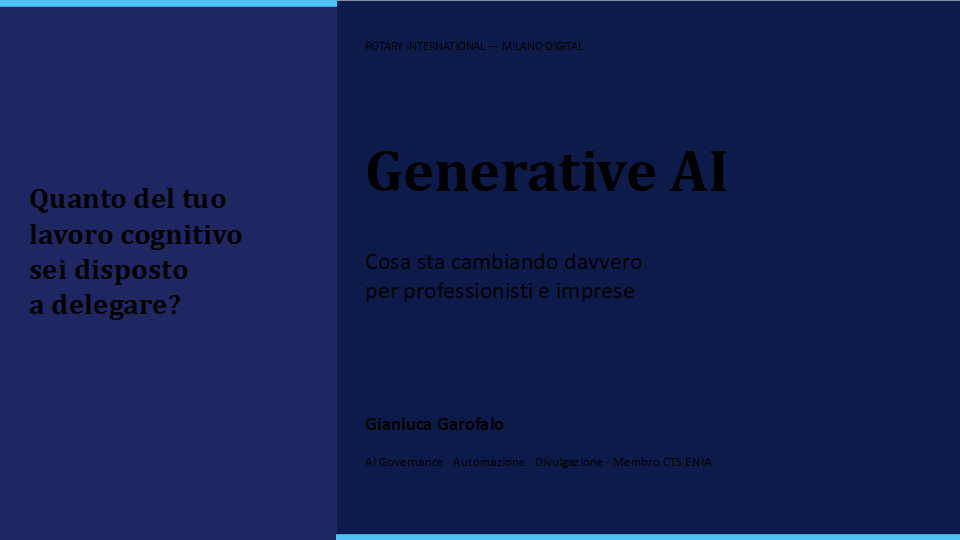
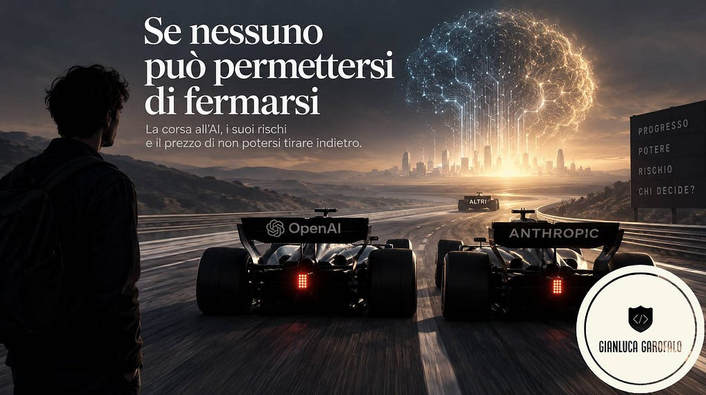
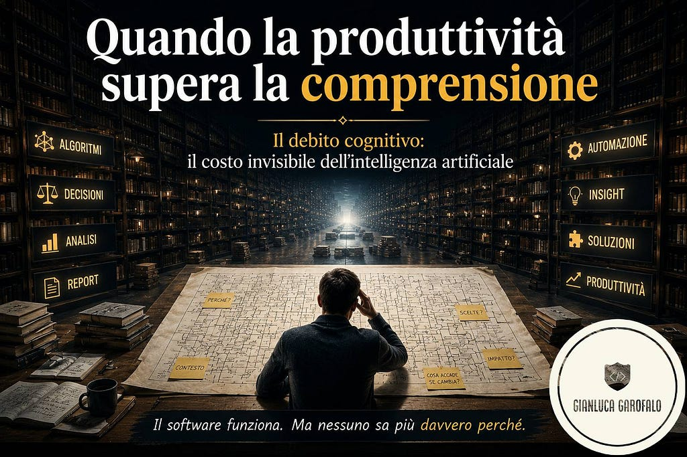
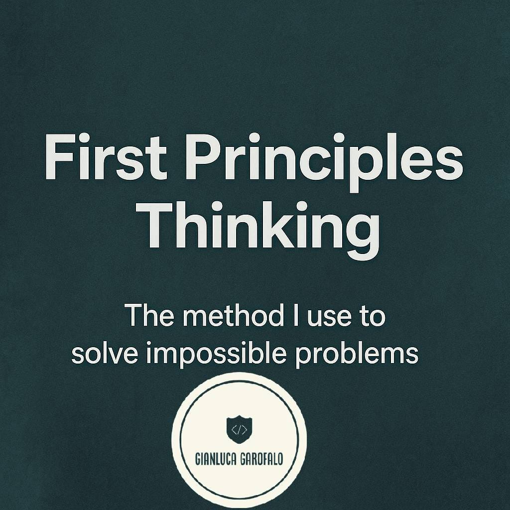

01 / PRESENTAZIONE

L’AI ha sempre una risposta. Ma è quella giusta?
Fiducia, scelte e pensiero critico: dalle basi dell’AI generativa ai bias e agli errori dei modelli.
Presentazioni, articoli e video. Tutti i materiali del sito, in uno spazio da esplorare.

Fiducia, scelte e pensiero critico: dalle basi dell’AI generativa ai bias e agli errori dei modelli.

Materiale per Rotary International – Milano Digital. AI classica, generativa e agentica, delega cognitiva e responsabilità per professionisti e imprese.
PowerPoint ↓AI, compiti e apprendimento: una riflessione su come valutare ciò che uno studente comprende quando lavora con ChatGPT.
Educazione
La corsa ai modelli più avanzati e il problema degli incentivi: perché rallentare diventa difficile anche quando emergono dubbi sulla sicurezza.
Società e governanceIl confronto tra chi ricorda il mondo prima dell’AI generativa e chi crescerà considerandola una presenza normale nella vita quotidiana.
TecnologiaQuando l’AI acquisisce un corpo: robot umanoidi, abitudini domestiche e nuove domande sul rapporto tra persone e macchine.
TecnologiaCostruire un videogioco insieme a un figlio usando l’AI: come cambiano la programmazione, il controllo del risultato e il significato di competenza.
Educazione
Il debito cognitivo: cosa accade quando produciamo codice, documenti e decisioni più velocemente di quanto riusciamo a comprenderli.
Pensiero criticoDecisioni automatizzate e tutela delle persone: una riflessione sui limiti della delega agli algoritmi e sul ruolo della responsabilità umana.
Società e governanceIl keynote all’International AI Week ENIA 2026: conoscenza, fiducia nelle risposte dell’AI e responsabilità che rimangono umane.
Società e governanceUna risposta fluida e convincente può nascondere un errore: un invito a verificare il contesto e a mantenere il pensiero critico.
Società e governanceAI Act, responsabilità e delega del giudizio: perché l’uso dell’intelligenza artificiale riguarda anche le scelte di chi la adotta.
Società e governanceL’AI è già nelle mani degli studenti: una riflessione sull’apprendimento e sul rischio di delegare anche il pensiero.
Società e governanceDalla risposta all’azione: una breve introduzione agli agenti AI, alla pianificazione e alle domande di controllo e responsabilità.
TecnologiaUna spiegazione accessibile dell’AI generativa: come produce contenuti e perché è utile distinguere risposte plausibili e comprensione.
Pensiero critico
Risolvere problemi complessi partendo dai principi primi: mettere in discussione le assunzioni, distinguere i vincoli reali dalle abitudini e ricostruire soluzioni essenziali, dalle architetture IT agli agenti AI.
Pensiero criticoNessun contenuto trovato. Prova un’altra ricerca.